Sig: Asignación de Direcciones Sup: Análisis Sintáctico Descendente en Ant: Optimización Independiente de la Con:
Una transformación de un programa puede ser descrita como un conjunto de reglas de transformación o esquema de traducción árbol sobre el árbol abstracto que representa el programa.
Antes de seguir, es conveniente que repase los conceptos en la sección 7.9.1 sobre lenguajes y gramáticas árbol.
En su forma mas sencilla, estas reglas de transformación
vienen definidas
por ternas
 , donde la primera componente de la
terna
, donde la primera componente de la
terna  es un patrón árbol que dice que árboles
deben ser seleccionados. La segunda componente
es un patrón árbol que dice que árboles
deben ser seleccionados. La segunda componente
 dice cómo debe transformarse el árbol que casa con el patrón
dice cómo debe transformarse el árbol que casa con el patrón
 . La acción
. La acción  indica como deben
computarse los atributos del árbol transformado
a partir de los atributos
del árbol que casa con el patrón
indica como deben
computarse los atributos del árbol transformado
a partir de los atributos
del árbol que casa con el patrón  .
Una forma de representar este esquema sería:
.
Una forma de representar este esquema sería:
{ action }
Por ejemplo:
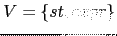 { $NUM_3{VAL} = $NUM_1{VAL} + $NUM_2{VAL} }
cuyo significado es que dondequiera que haya un nódo del AAA que case
con el patrón de entrada
 deberá sustituirse
el subárbol
deberá sustituirse
el subárbol
 por el subárbol 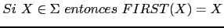. Al igual que en los
esquemas de traducción, enumeramos las apariciones de los símbolos,
para distinguirlos en la parte semántica. La acción indica
como deben recomputarse los atributos para el nuevo árbol:
El atributo
por el subárbol 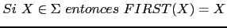. Al igual que en los
esquemas de traducción, enumeramos las apariciones de los símbolos,
para distinguirlos en la parte semántica. La acción indica
como deben recomputarse los atributos para el nuevo árbol:
El atributo VAL del árbol resultante es la suma de los atributos
VAL de los operandos en el árbol que ha casado.
La transformación se repite hasta que se produce la normalización del árbol.
Las reglas de ``casamiento'' de árboles pueden ser mas complejas, haciendo alusión a propiedades de los atributos, por ejemplo

{ notlive($LEFTVALUE{VAL}) }

indica que se pueden eliminar aquellos árboles de tipo asignación
en los cuáles la variable asociada con el nodo  no se usa posteriormente.
no se usa posteriormente.
Otros ejemplos con variables  y 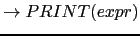:
y 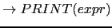:
{ $NUM{VAL} != 0 }
{ $NUM{VAL} == 0 }
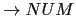
Observe que en el patrón de entrada
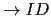 aparece un
``comodín'': la variable-árbol  , que hace que el árbol
patrón
case con cualquier árbol de asignación,
independientemente de la forma que tenga su subárbol derecho.
, que hace que el árbol
patrón
case con cualquier árbol de asignación,
independientemente de la forma que tenga su subárbol derecho.
Las siguientes definiciones formalizan una aproximación simplificada al significado de los conceptos patrones árbol y casamiento de árboles.
El patrón
 es un ejemplo de patrón no lineal.
La idea es que un patrón lineal como éste ``fuerza'' a que los árboles
es un ejemplo de patrón no lineal.
La idea es que un patrón lineal como éste ``fuerza'' a que los árboles  que casen con el patrón deben tener iguales los dos correspondientes
subárboles
que casen con el patrón deben tener iguales los dos correspondientes
subárboles  y
y
 situados en las posiciones de las variables
7.1
situados en las posiciones de las variables
7.1
la cuál genera los árboles concretos para la gramática
¿Es
 un patrón árbol sobre el conjunto de variables
un patrón árbol sobre el conjunto de variables  ?
¿Lo es
?
¿Lo es
 ? ¿Es
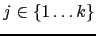 un patrón árbol?
? ¿Es
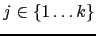 un patrón árbol?
considerando el conjunto de variables
 . El patrón
. El patrón
 es del tipo
es del tipo  .
.
Tal función puede ser naturalmente extendida de las variables a los árboles: los nodos (hoja) etiquetados con dichas variables son sustituidos por los correspondientes subárboles.
|
|
 |
Obsérvese que, al revés de lo que es costumbre, la aplicación
de la sustitución  al patrón se escribe por detrás:
al patrón se escribe por detrás:  .
.
También se escribe
 si las variables
que aparecen en
si las variables
que aparecen en  de izquierda a derecha son
de izquierda a derecha son
 .
.
Por ejemplo es obvio que para el árbol raíz
 no existe sustitución
posible:
no existe sustitución
posible:

ya que un término con raíz  nunca podrá ser igual a un término con raíz
nunca podrá ser igual a un término con raíz
 .
.
El problema aquí es equivalente al de las expresiones regulares en el caso de los lenguajes lineales. En aquellos, los autómatas finitos nos proveen con un mecanismo para reconocer si una determinada cadena ``casa''' o no con la expresión regular. Existe un concepto análogo, el de autómata árbol que resuelve el problema del ``casamiento'' de patrones árbol. Al igual que el concepto de autómata permite la construcción de software para la búsqueda de cadenas y su posterior modificación, el concepto de autómata árbol permite la construcción de software para la búsqueda de los subárboles que casan con un patrón árbol dado.
Estamos ahora en condiciones de plantear una segunda aproximación al problema de la optimización independiente de la máquina utilizando una subrutina que busque por aquellos árboles que queremos optimizar (en el caso del plegado los árboles de tipo operación) y los transforme adecuadamente.
La función
match_and_transform_list recibe una lista
de árboles los cuales recorre sometiéndolos
a las transformaciones especificadas. La llamada para
producir el plegado sería:
Tree::Transform::match_and_transform_list(
NODES => $tree->{STS}, # lista de sentencias
PATTERN => sub {
$_[0]->is_operation and $_[0]->LEFT->isa("NUM")
and $_[0]->RIGHT->isa("NUM")
},
ACTION => sub {
$_[0] = Machine::Independent::Optimization::reduce_children($_[0])
}
);
Además de la lista de nodos le pasamos como argumentos una
referencia a la subrutina encargada de reconocer los patrónes
árbol (clave PATTERN) y una referencia a la
subrutina que describe la acción que se ejecutará (clave ACTION) sobre
el árbol que ha casado. Ambas subrutinas
asumen que el primer argumento que se les pasa
es la referencia a la raíz del árbol que está siendo explorado.
Los métodos isa, can y VERSION
son proporcionados por una clase especial denominada clase UNIVERSAL,
de la cual implícitamente hereda toda clase.
El método isa nos permite saber si una clase hereda de otra.
La subrutina match_and_transform_list
recibe los argumentos y da valores por defecto a los mismos
en el caso de que no hayan sido establecidos.
Finalmente, llama a match_and_transform
sobre cada uno de los nodos ``sentencia'' del programa.
sub match_and_transform_list {
my %arg = @_;
my @statements = @{$arg{NODES}} or
Error::fatal("Internal error. match_and_transform_list ".
"espera una lista anónima de nodos");
local $pattern = ($arg{PATTERN} or sub { 1 });
local @pattern_args = @{$arg{PATTERN_ARGS}} if defined $arg{PATTERN_ARGS};
local $action = ($arg{ACTION} or sub { print ref($_[0]),"\n" });
local @action_args = @{$arg{ACTION_ARGS}} if defined $arg{ACTION_ARGS};
for (@statements) {
match_and_transform($_);
}
}
La subrutina match_and_transform
utiliza el método can para comprobar que el
nodo actual dispone de un método
para calcular la lista con los hijos del nodo.
Una vez transformados los subárboles del nodo actual
procede a comprobar que el nodo casa con el patrón
y si es el caso le aplica la acción definida:
package Tree::Transform;
our $pattern;
our @pattern_args;
our $action;
our @action_args;
our @statements;
sub match_and_transform {
my $node = $_[0] or Error::fatal("Error interno. match_and_transform necesita un nodo");
Error::fatal("Error interno. El nodo de la clase",ref($node),
" no dispone de método 'children'") unless $node->can("children");
my %children = $node->children;
for my $k (keys %children) {
$node->{$k} = match_and_transform($children{$k});
}
if ($pattern->($node, @pattern_args)) {
$action->( $node, @action_args);
}
return $node;
}
Recordemos el esquema de herencia que presentamos en la sección anterior.
Las clases Leaf y Binary proveen versiones del método children.
Teníamos:
package Node;
sub is_operation {
my $node = shift;
return ref($node) =~ /^(TIMES)|(PLUS)$/;
}
package Leaf; # hoja del AAA
our @ISA = ("Node");
sub children {
return ();
}
package Binary;
our @ISA = ("Node");
sub children {
my $self = shift;
return (LEFT => $self->{LEFT}, RIGHT => $self->{RIGHT});
}
Los objetos de la clase Leaf tienen acceso
al método is_operation.
Las clases PLUS y TIMES
heredan de la clase BINARY:
package PLUS;
our @ISA = ("Binary");
sub operator {
my $self = shift;
$_[0]+$_[1];
}
....
package TIMES;
our @ISA = ("Binary");
sub operator {
my $self = shift;
$_[0]*$_[1];
}
....
La subrutina reduce_children introducida en la
sección
7.11
es la encargada
de crear el nuevo nodo con el resultado de operar los
hijos izquierdo y derecho:
1 sub reduce_children {
2 my ($node) = @_;
3
4 my $value = $node->operator($node->LEFT->VAL, $node->RIGHT->VAL);
5 NUM->new(VAL => $value, TYPE => $PL::Tutu::int_type);
6 }
En la línea 4 se usa el método operator asociado
con un nodo operación.
match_and_transform tal y como se explicó en la sección
7.12.
Ademas del plegado de constantes use las nuevas subrutinas para aplicar simultáneamente las siguientes transformaciones algebraicas:
|
|
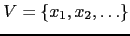 { $NUM{VAL} == 0 } |
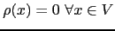 |
| 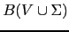 | { $NUM{VAL} == 0 } |
|
| 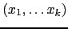 | { $NUM{VAL} == 1 } |
|
|
|
{ $NUM{VAL} == 1 } |
int a; a = a * 4 * 5;¿Será plegado el
4 * 5?
Sin embargo si que se pliega si el programa es de la forma:
int a; a = a * (4 * 5);No intente en esta práctica que programas como el primero o como
4*a*5*b sean plegados.
Para lograrlo sería necesario introducir transformaciones adicionales
y esto no se requiere en esta práctica.